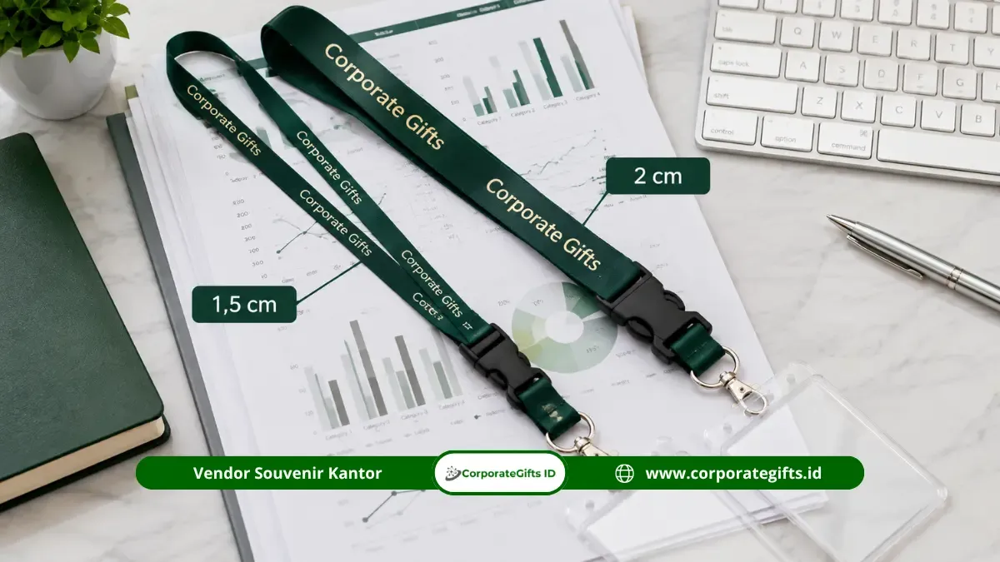

Corporate Gifts ID - Bahan lanyard custom kantor yang paling umum digunakan adalah polyester, nylon, dan satin, dengan perbedaan utama pada struktur tekstur serat kain, ketahanan gesekan fisik, fleksibilitas pemakaian, serta ketajaman hasil cetak warna logo. Sebagaimana dijelaskan dalam ulasan mengenai fungsi strategis lanyard ID card kantor untuk identitas karyawan, tali tanda pengenal ini menjadi representasi visual pertama yang dilihat oleh klien, tamu kantor, maupun rekan bisnis saat berinteraksi.
Kesalahan dalam menentukan spesifikasi bahan sering kali mengakibatkan tali cepat berbulu, warna sablon memudar dalam hitungan bulan, atau bahkan memicu iritasi pada kulit leher karyawan. Oleh karena itu, bagian pengadaan (procurement) dan manajemen HRD perlu memahami karakteristik teknis tiap material sebelum menerbitkan surat pemesanan (PO) massal.
Poin Kunci Pemilihan Bahan Lanyard:
- Polyester Tissue: Paling ekonomis dan awet untuk ratusan karyawan, ideal untuk cetak digital sublimasi full color bolak-balik.
- Nylon Mengkilap: Memberikan tampilan berkilau mewah dan sangat lentur, cocok untuk representasi level manajerial dan acara formal.
- Satin Lembut: Permukaan ultra-halus seperti sutra, pilihan utama untuk tamu kehormatan VVIP dan seminar eksekutif.
- Aksesori Ergonomis: Penambahan stopper lepas-pasang dan klip safety breakaway meningkatkan kepatuhan keselamatan kerja K3.
Peran Strategis Lanyard Custom dalam Identitas Korporat
Di era operasional modern, lanyard bukan sekadar seutas tali penggantung kartu nama plastik. Tali ini terintegrasi langsung dengan kartu akses pintar (smart access card / RFID) untuk gerbang otomatis kantor, absensi digital, serta kartu akses lift gedung pencakar langit.
Desain tali yang seragam dengan warna identitas korporat (brand guidelines) menciptakan rasa kesatuan di antara seluruh staf, memperkuat reputasi profesional di mata mitra bisnis luar, serta mencegah penyusupan pihak asing ke area terbatas perusahaan.
Karakteristik Bahan Polyester untuk Penggunaan Harian
Polyester adalah material sintetis paling populer di industri percetakan tali ID card di seluruh dunia. Terdapat dua varian utama polyester di pasaran:
- Polyester Datar (Sarung): Memiliki tekstur anyaman bergaris yang agak kaku. Biasanya dicetak menggunakan metode sablon manual pasta rubber 1 hingga 2 warna. Varian ini sangat murah dan banyak dipakai untuk kebutuhan kepanitiaan sementara.
- Polyester Tissue: Merupakan pengembangan material premium dengan serat anyaman yang sangat rapat, rata, dan tanpa pori-pori kasar. Permukaannya yang halus menyerupai lembaran tisu tebal menjadikannya media sempurna untuk cetak digital sublimasi (heat transfer). Warna logo gradasi foto akan meresap sempurna ke dalam serat kain dan tahan cuci tanpa pernah luntur.
Bagi perusahaan yang mencari solusi seimbang antara durabilitas harian 365 hari, kenyamanan leher, dan efisiensi anggaran belanja tahunan, polyester tissue adalah standar emas yang paling direkomendasikan.
Kelebihan dan Tekstur Halus Mengkilap Bahan Nylon
Bahan nylon memiliki karakteristik serat poliamida yang sangat kuat, lentur, dan memiliki kilau alami (glossy sheen) yang memantulkan cahaya lampu kantor secara elegan.
- Kenyamanan Sentuhan Kulit: Nylon sangat licin dan tidak kaku, sehingga sangat nyaman dikenakan seharian oleh staf yang memiliki mobilitas tinggi berpindah antar ruang kerja.
- Kerapatan Warna Sablon: Permukaan nylon menyerap tinta sablon khusus dengan sangat pekat, menghasilkan kontras warna logo perusahaan yang sangat tajam dan hidup.
- Posisi Anggaran: Biaya produksi bahan nylon sedikit lebih tinggi dibanding polyester biasa, sehingga kerap dijadikan pilihan untuk seragam kerja level manajer, supervisor, atau divisi humas (PR).

Detail perbandingan visual antara serat padat polyester sublimasi dan kehalusan satin yang memantulkan kilau elegan.
Kapan Memilih Bahan Satin untuk Kebutuhan VVIP
Satin terbuat dari teknik tenun khusus yang menghasilkan satu sisi permukaan mengkilap berkilau dan terasa dingin di kulit. Karakteristik ini memberikan nuansa kemewahan instan yang tidak dapat ditandingi oleh bahan poliester biasa.
Kapan perusahaan sebaiknya memilih lanyard berbahan satin?
- Konferensi Tingkat Tinggi dan Delegasi Asing: Menyediakan tanda pengenal khusus bagi pembicara kunci (keynote speaker), pejabat kementerian, atau dewan komisaris.
- Penghargaan Tahunan dan Gala Dinner: Digunakan untuk tamu kehormatan dan investor strategis agar mendapatkan perlakuan istimewa sejak meja registrasi.
- Paket Onboarding Karyawan Eksekutif: Dipadukan dengan tempat kartu (card holder) berbahan kulit asli (genuine leather) dalam paket merchandise kantor eksklusif.
Tabel Komparasi Material Bahan Lanyard Kantor
Untuk mempermudah tim panitia menentukan pilihan yang tepat sesuai anggaran dan peruntukannya, simak perbandingan menyeluruh berikut:
| Material Lanyard | Karakter Permukaan | Metode Cetak Terbaik | Daya Tahan Harian | Rekomendasi Pemakaian |
|---|---|---|---|---|
| Polyester Tissue | Rata, padat, tanpa tekstur kasar | Digital printing sublimasi 2 sisi | Sangat tinggi (anti-luntur) | Karyawan tetap, event massal, diklat |
| Polyester Datar | Tekstur anyaman garis agak kaku | Sablon pasta manual 1-2 warna | Sedang (bisa retak bila tertekuk) | Event singkat, panitia mahasiswa |
| Nylon Premium | Lentur, licin, kilau glossy halus | Sablon presisi silikon / timbul | Tinggi dan tahan gesekan | Level supervisor, tim representatif |
| Satin Halus | Sangat licin, berkilau seperti sutra | Sublimasi warna pastel / sablon emas | Sedang (hindari benda tajam) | Tamu VVIP, narasumber, malam penghargaan |
Menentukan Lebar dan Panjang Tali Lanyard yang Ergonomis
Proporsi fisik tali sangat menentukan kenyamanan saat menggantung di dada serta keterbacaan tipografi merek Anda:
- Lebar 1,5 cm: Desain minimalis dan ramping. Sangat pas untuk perusahaan yang mengusung konsep simpel atau hanya mencetak teks nama brand tanpa logo grafis rumit.
- Lebar 2,0 cm (Standar Paling Populer): Merupakan proporsi ideal yang paling banyak dipesan. Memberikan ruang visual yang cukup leluasa untuk menampilkan lambang korporat, nama institusi, dan alamat website secara jelas dari jarak pandang 2 meter.
- Lebar 2,5 cm: Dipilih untuk kebutuhan branding mencolok, lanyard festival musik, atau kartu staf lapangan yang membutuhkan kekuatan tali ekstra tebal.
- Panjang Standar 90 cm (Keliling): Saat dilipat menjadi lanyard jadi dengan pengait, panjang jatuh ke dada berkisar antara 40 hingga 45 cm. Posisi ini memastikan kartu ID berada tepat di area dada atas atau ulu hati, posisi paling ergonomis untuk tapping mesin absensi.
Pilihan Aksesori Pengait, Stopper, dan Klip Pengaman K3
Kelengkapan aksesori logam dan plastik pada ujung lanyard memberikan fungsi fungsional yang signifikan:
- Pengait Metal (Lobster Hook / Oval Claw): Terbuat dari logam nikel anti-karat dengan tuas pegas yang kokoh untuk menahan beban tempat kartu identitas dan gantungan kunci USB.
- Stopper Buckle Plastik: Klip lepas-pasang di bagian bawah yang memungkinkan pemakai melepas kartu ID tanpa harus mencopot seluruh lingkaran tali dari kepala, sangat praktis saat harus melakukan tapping kartu akses pada gerbang parkir.
- Safety Breakaway Buckle (Klip Keselamatan K3): Klip pengaman khusus yang dipasang di belakang leher. Klip ini akan otomatis terlepas sendiri jika tali tersangkut pada mesin pabrik atau lift, melindungi karyawan dari risiko tercekik fatal sesuai standar keselamatan kerja industri.
- Card Holder Pendukung: Padukan dengan wadah kartu kulit sintetis eksklusif atau mika keras (hard acrylic case) transparan anti-gores.
FAQ Seputar Bahan Lanyard Custom Kantor
Kesimpulan dan Solusi Lanyard CorporateGifts.ID
Memilih bahan lanyard custom yang tepat bukan sekadar urusan estetika visual, melainkan langkah krusial untuk memastikan kenyamanan kerja karyawan, ketahanan identitas merek, dan efisiensi anggaran pengadaan kantor jangka panjang.
CorporateGifts.ID siap membantu memproduksi tali lanyard kustom perusahaan Anda dengan material grade-A bersertifikasi, teknologi digital sublimasi beresolusi tinggi, serta aneka pilihan aksesoris logam premium. Hubungi tim konsultan kami sekarang atau ajukan permohonan penawaran resmi melalui formulir RFQ Corporate Gifts ID untuk mendapatkan visual mockup gratis dan penawaran harga terbaik!

Ditulis oleh: Arinda Zakia
Senior Corporate Gifting SpecialistSpesialis pengadaan cinderamata korporat dan konsultan pengadaan B2B di CorporateGifts.ID. Berpengalaman lebih dari 8 tahun dalam manajemen merchandise promosi, standardisasi perlengkapan kantor, dan kurasi souvenir premium instansi pemerintah serta korporasi multinasional.
Lihat Profil Lengkap & Panduan Lainnya